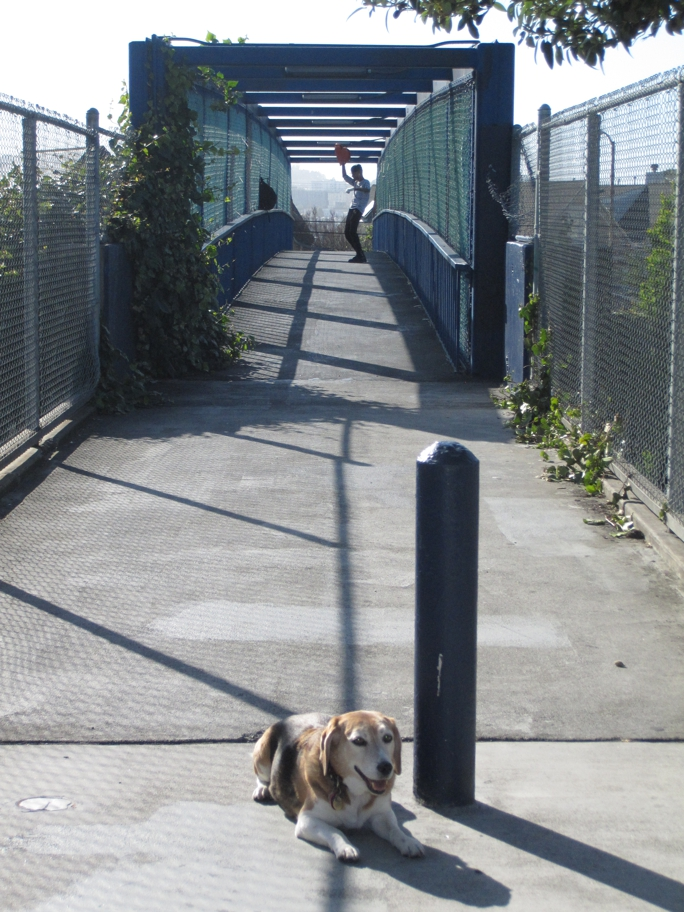

<--Previous Up Next-->

The man in the background wears a big heart-shaped glove and dances for drivers on the 18th Street pedestrian bridge. He's very shy, so Huxley had to take this on the sly.
hearts Huxley Beagle sanfrancisco